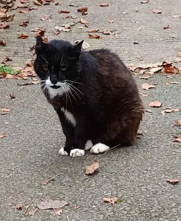

Branly 2025 — La stabilité incarnée, l’avenir en tête
Il n’a jamais eu besoin de discours pour convaincre, ni de CV pour impressionner. Devant le CROUS, à la croisée des chemins étudiants, M. Branly règne depuis des années en maître absolu du territoire. Sa simple présence apaise, son miaulement ponctuel — « Miaou, miaou, mi ma maou » — agit comme un baume sur les esprits surmenés.
On l’accuse parfois de ne rien faire, mais ses partisans le savent : il œuvre sans relâche. Entre deux caresses dispensées par des mains plus ou moins habiles, il veille, il dort avec autorité, il marche avec lenteur et prestige. Il inspecte chaque recoin comme un ministre en visite.
Sa devise est claire : « Miaou. » (Zéro repos.) Il ne cherche pas la lumière, il est la lumière. Son rapport aux étudiants est empreint d’une sagesse distante : un savant équilibre entre affection et agacement contenu. Et malgré son âge, il n’est pas question de retraite. Il est là pour durer.
Car Branly n’est pas seulement une mascotte : il est une figure, un repère, une constante dans le chaos universitaire. Et si vous pensez que cela suffit à faire de lui un candidat sérieux, attendez de découvrir son programme.
Un programme au poil
1. "Pas besoin de changement"
M. Branly, fidèle à sa vision stable et sans fioritures, prône la continuité. Pourquoi chambouler ce qui fonctionne déjà parfaitement ? Sous sa houlette, le Crous n’a jamais été aussi paisible, et il n’est pas question de remettre en question cet équilibre sacré. Le changement, selon Branly, n’est qu’une illusion. Tout va bien, et c’est ainsi qu’il faut que ça reste. Pourquoi chercher à révolutionner ce qui, dans la grande sagesse féline, a toujours été la voie de la prospérité ?
2. Protection du territoire
Le territoire, sous la direction de Branly, est un sanctuaire. Ce n’est pas un lieu pour les chats parasites qui, en quête de caresses, s’aventurent trop près des résidents de marque. Le Parti Branly s’engage à protéger ce territoire sacré contre ces intrus, et surtout contre les "faux chats" qui s’approprient les croquettes des véritables habitants. Fini le vol des ressources ! Les vrais chats doivent être respectés et protégés.
3. Loi "Karsher"
Dans la lutte contre les dérives et les comportements indésirables, Branly introduit la loi "Karsher", une mesure radicale pour nettoyer le territoire de toute présence indésirable. Les racailles droguées à l'herbe à chat, qui perturbent l’ordre et la sérénité du Crous, seront éradiquées. Une approche ferme mais juste, pour que chacun puisse retrouver sa place dans un environnement purifié et ordonné.
4. Hérésie anti-chauves
La question des chats sans poils est un sujet délicat, mais le Parti Branly n’a pas peur de le soulever. Nous défendons le territoire contre l’hérésie des chats chauves. Ces individus, qui manquent cruellement de dignité féline, ne peuvent pas prétendre occuper la même place que ceux qui incarnent la grandeur de notre espèce. Branly veille à ce que le territoire reste un lieu de poils, de prestige et de majesté. Il n’y a pas de place pour ceux qui ne respectent pas cette norme fondamentale.
5. Réduction de la Miaousphère
Les jeunes générations de chats doivent comprendre qu’un véritable chat se distingue par sa sagesse et son silence. Trop de miaous, trop de réseaux sociaux ! Il est temps que les jeunes chatons consacrent moins de temps à miauler en ligne et plus à étudier pour devenir des citoyens responsables et respectueux. Moins de bruit, plus de réflexion : tel est le credo de Branly pour l'avenir de notre Miaousphère.
6. Interdiction de ChienGPT
Enfin, et c'est peut-être l'un des points les plus fondamentaux de son programme, Branly entend éradiquer toute forme de chien-génératif. ChienGPT est une infamie anti-féline, une menace pour l'intégrité de notre communauté. Ce logiciel, conçu pour détruire l'âme féline, n’a pas sa place dans un monde régi par les lois du chat. Sous le règne de Branly, nous éradiquerons cette hérésie numérique et restaurerons l'équilibre naturel.